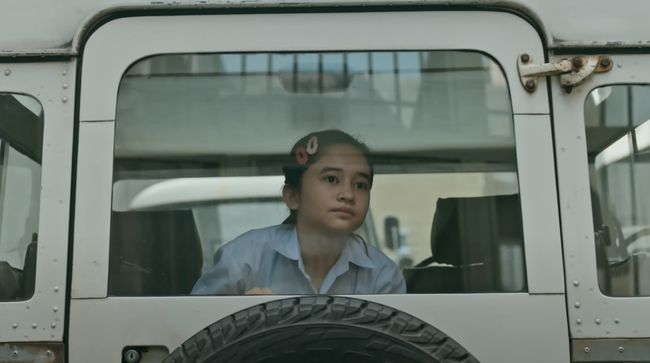
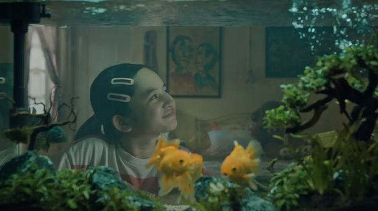
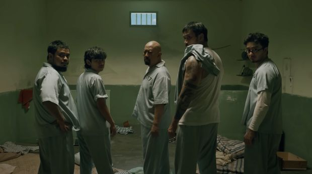

Review Film: 2nd Miracle in Cell No. 7
Purwakarta, AboutNews-- Saya semula skeptis, bahkan cenderung tak yakin, dengan proyek 2nd Miracle in Cell No. 7. Apalagi versi pendahulunya yang rilis 2022 lalu menyisakan banyak catatan bagi saya, terutama dari aspek penuturan dan visual. Namun saat saya duduk memulai perjalanan 2 jam 27 menit dalam 2nd Miracle In Cell No. 7, saya akui bahwa proyek ini jauh lebih matang, mulus, dan dieksekusi dengan berkali-kali lipat lebih baik dibanding pendahulunya.
Bahkan, dalam berbagai aspek, film 2nd Miracle In Cell No. 7 melampaui ekspektasi saya, yang tentu saja memperbaiki saga pertamanya yang tak lebih dari sekadar adaptasi itu. Mungkin ulasan ini akan agak panjang, jadi saya mohon bersabar. Mari mulai dari aspek penulisan naskah. Alim Sudio yang kembali duduk sebagai penulis naskah jelas mengetahui apa yang perlu diperbaiki dari film pertamanya, atau memiliki pihak yang mampu menguatkan kualitas penulisan ceritanya.
Konon, untuk proyek kedua ini, Alim memang langsung diawasi oleh Lee Hwan-kyung selaku kreator asli Miracle In Cell No. 7. Selain itu, Alim juga didampingi tim khusus dalam penulisan naskah. Faktor pendampingan tersebut yang memang saya rasa kurang banyak diterapkan dalam pembuatan film Indonesia. Pendampingan atau memiliki tim dalam menggodok naskah akan membantu mematangkan cerita dengan lebih baik. Apalagi kali ini, Alim dibimbing langsung oleh kreator asli waralaba Miracle In Cell No. 7 yang film aslinya sanggup memerah kantung air mata jutaan penonton di dunia. Hasilnya pun langsung terlihat, bahkan tak sampai 15 menit setelah film dimulai.
Pada film pertama, saya mungkin baru tergugah ketika 40 menit terakhir. Sejak menit awal sampai menit ke-100 film rilisan 2022 itu, saya susah payah untuk bisa merasakan berbagai drama yang disajikan Alim dan Hanung Bramantyo. Namun kali ini, duet Alim Sudio bersama Herwin Novianto yang ditunjuk menggantikan Hanung di kursi sutradara, sudah mampu menggoyah dengan cepat. Saya akui kaget cerita sekuel ini sudah sebegitu kuat sejak awal. Alim dengan mulus membagi kisah memancing tawa dengan mengetuk kantung mata dengan porsi yang sangat pas, terukur, dan tersebar dengan adil sepanjang durasi film. Bukan cuma itu, Alim, Herwin, dan Muhadkly Acho juga sukses membuat saya ingin bangun dari kursi, masuk ke film, dan menghajar Hengky.
Saya angkat topi dan mengucapkan terima kasih sebesar-besarnya untuk sutradara Herwin Novianto dan sinematografer Rahmat Nur Hidayat. Ganjalan terbesar saya saat melihat saga pertama, yakni filter kuning yang bikin saya serasa sedang demam dan berbagai tampilan sok dramatis yang mengganggu mata itu, akhirnya dibersihkan. 2nd Miracle in Cell No. 7 menampilkan visual yang lebih bersih, jelas, sederhana, tapi tetap mengena sesuai dengan yang saya inginkan, sehingga saya bisa konsentrasi dengan cerita yang dibangun. Herwin bahkan beberapa kali ngide untuk memainkan pengambilan gambar dalam film ini. Seperti menyorot --sangat-- close up kepada Hengky beberapa kali, atau memainkan putaran kamera sebagai transisi.
Jujur untuk adegan close up Hengkuy membuat saya agak risih karena kumis dan bibirnya jadi begitu dekat dengan mata, sehingga saya seolah bisa merasakan nafas Muhadkly Acho. Namun memang saya akui, hal itu juga bikin saya makin emosi ingin mendatangi karakter itu. Meski begitu, saya menilai reaksi itu sebagai buah dari kemampuan para pemain dalam membawakan naskah yang sudah sangat matang. Inilah salah satu keunggulan bila film memiliki naskah matang, maka aktor akan dengan baik dalam membawakan karakternya. Peningkatan kemampuan para aktor ini sangat terlihat, bagi saya, pada Vino G Bastian. Entah karena memang naskahnya yang sudah sangat baik atau Vino yang sudah lihai memerankan sosok Dodo Rozak, penampilannya kali ini mulus banget.
Vino sukses menunjukkan roller coaster emosi Dodo yang lebih hebat pada film ini dibanding sebelumnya, tapi tetap mampu fokus memerankan orang berkebutuhan khusus. Belum lagi ada sejumlah gerak tubuh sederhana yang ditampilkan Vino dan menguatkan kondisi fisik serta mental Dodo. Kemudian salut juga untuk geng sel nomor 7, Indro Warkop, Tora Sudiro, Rigen Rakelna, Indra Jegel, dan Bryan Domani, ditambah Denny Sumargo. Mereka terasa lebih solid, baik secara chemistry dan keterikatan dengan karakter masing-masing. Keenamnya sukses menjadi bagian penting dalam kisah 2nd Miracle in Cell No. 7. Sementara untuk Graciella Abigail sebagai Kartika muda, saya merasa ada perubahan dari performanya yang membuat saya cenderung lebih memilih penampilan pada film pertama. Mungkin karena film pertama, daya tarik utamanya adalah pesona Kartika yang masih sangat bocah dan polos.
Pujian khusus saya berikan untuk Marsha Timothy, Muhadkly Acho, Coki Pardede, dan Ayushita yang mampu memberikan performa apik dan memperkaya emosi dalam 2nd Miracle in Cell No. 7, baik berupa haru, kesal, hingga tawa. Meski secara umum saya menyanjung 2nd Miracle in Cell No. 7 dibanding film pertamanya, saya masih merasa film ini memiliki beberapa catatan.
Pertama, soal pemberian scoring yang saya rasa masih kebanyakan. Bila dibanding film pertamanya di mana scoring terasa lebih kencang dari suara dialog pemain, kali ini volume scoring sudah lebih baik. Namun ada scoring di beberapa adegan yang saya rasa tidak pas atau masih lebih keras dibanding dialog pemain. Saya rasa bila scoring ini dibuat lebih minimalis lagi tanpa harus membuat film ini menjadi sepi, 2nd Miracle in Cell No. 7 akan terasa lebih riil dan penonton bisa lebih fokus dengan performa juga alur cerita yang sudah mulus.
Kedua adalah soal durasi. Terlepas dari ceritanya yang memang sudah mulus, menghabiskan hampir 3 jam di dalam bioskop masih terbilang membuat ragu di awal. Belum lagi suhu bioskop yang makin dingin kala musim hujan jadi tantangan penonton yang kerap beser.
Ketiga, kisah Miracle in Cell No. 7 memang masih memiliki banyak peluang pengembangan untuk saga-saga berikutnya. Akan tetapi, bila pihak Falcon Studios berniat menambah saga dan mendapatkan restu Lee Hwan-kyung, saya hanya berpesan untuk kualitasnya tidak lebih buruk dari 2nd Miracle in Cell No. 7.
Hal itu karena 2nd Miracle in Cell No. 7 sudah mampu memperbaiki banyak kekurangan dari film pertama. Sehingga akan sangat disayangkan bila kelanjutannya memiliki kualitas yang menurun. Namun kalau pun tidak dilanjutkan, 2nd Miracle in Cell No. 7 sudah memiliki penutup paling pas untuk kisah Kartika dan Bapak Dodo.